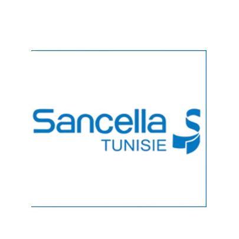

Direction Logistique
SANCELLA Tunisie
Quel impact du leadership sur la gestion de l’information ?
Mon projet de fin d’études porte sur l’impact du style de leadership sur l’optimisation de la gestion de l’information.
- Analyser
- Réalisation d’un diagnostic managérial et analyse des résultats d’un questionnaire interne.
- Proposer
- Proposition d’axes d’amélioration pour renforcer la communication, la coordination et le reporting au sein de la Direction Logistique.